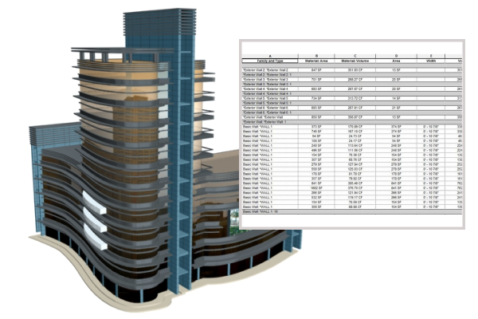

BIM Use: 5D Cost Estimation

5D Cost Estimation
A process in which BIM is used to assist in the generation of accurate quantity take-offs and cost estimates throughout the lifecycle of a project.
This process allows the project team to see the cost effects of their changes during all phases of the project, which can help curb excessive budget overruns due to project modifications. Specifically, BIM can provide cost effects of additions and modifications, with the potential to save time and money. It is most beneficial in the early design stages of a project.
- Precisely quantify modeled materials.
- Quickly generate quantities to assist in the decision-making process.
- Generate more cost estimates at a faster rate.
- Better visual representation of project and construction elements that must be estimated.
- Provide cost information to the Appointing Party during the early decision-making phase and throughout the lifecycle.
- Easier exploration of different design options and concepts within the Appointing Party's budget.
- Saves estimator's time by reducing quantity take-off time.
- Allows estimators to focus on high-value activities: identifying construction assemblies, generating pricing, and factoring risks.
- When added to a construction schedule (4D Model), a 5D estimate can help track budgets throughout construction.
- Quickly determine costs of specific objects.
- Easier to train new estimators through this highly visual process.
- Model-based estimating software
- Design authoring software (e.g., Revit, ArchiCAD)
- Accurately built design model
- Cost data (Including MasterFormat and Uniformat data)
- Ability to define specific design modeling procedures which yield accurate quantity take-off information.
- Ability to identify quantities for the appropriate estimating level (e.g., ROM, SF, etc.) upfront.
- Ability to manipulate models to acquire quantities usable for estimation.